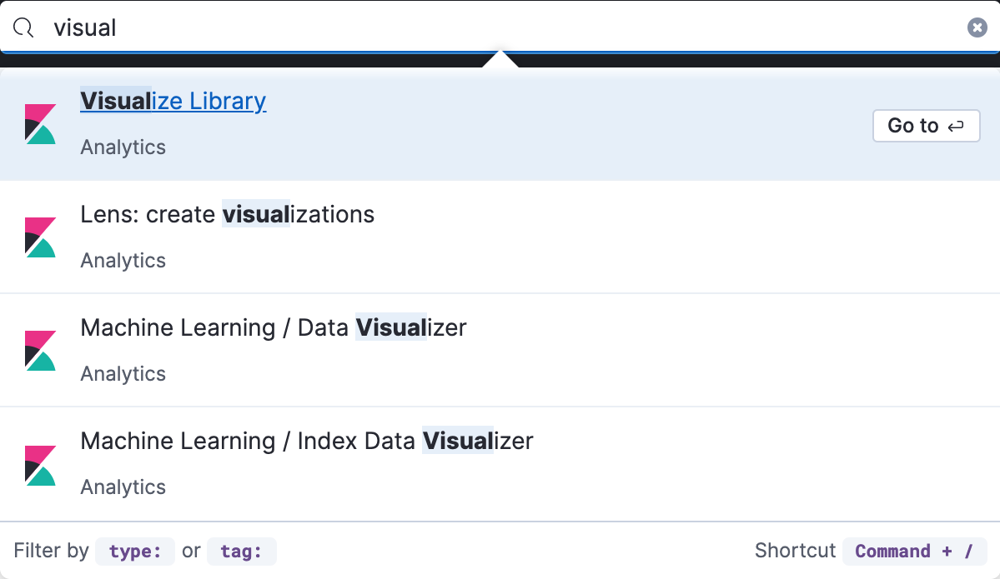
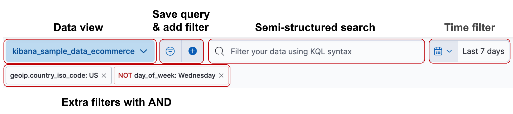
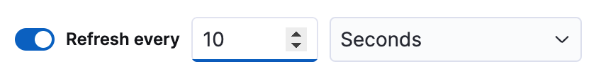
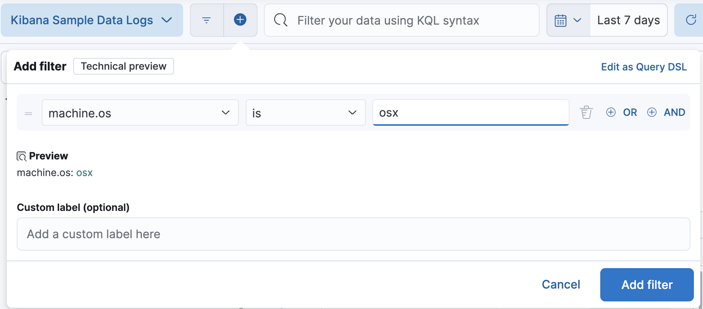

Kibana concepts
editKibana concepts
editLearn the shared concepts for analyzing and visualizing your data
As an analyst, you will use a combination of Kibana apps to analyze and visualize your data. Kibana contains both general-purpose apps and apps for the Enterprise Search, Elastic Observability, and Elastic Security solutions. These apps share a common set of concepts.
Three things to know about Elasticsearch
editYou don’t need to know everything about Elasticsearch to use Kibana, but the most important concepts follow:
- Elasticsearch makes JSON documents searchable and aggregatable. The documents are stored in an index or data stream, which represent one type of data.
- Searchable means that you can filter the documents for conditions. For example, you can filter for data "within the last 7 days" or data that "contains the word Kibana". Kibana provides many ways for you to construct filters, which are also called queries or search terms.
- Aggregatable means that you can extract summaries from matching documents. The simplest aggregation is count, and it is frequently used in combination with the date histogram, to see count over time. The terms aggregation shows the most frequent values.
Finding your apps and objects
editKibana offers a global search bar on every page that you can use to find any app or saved object. Open the search bar using the keyboard shortcut Ctrl+/ on Windows and Linux, Command+/ on MacOS.

Accessing data with data views
editKibana requires a data view to tell it which Elasticsearch data you want to access, and whether the data is time-based. A data view can point to one or more Elasticsearch data streams, indices, or index aliases by name.
Data views are typically created by an administrator when sending data to Elasticsearch. You can create or update data views in Stack Management, or by using a script that accesses the Kibana API.
Kibana uses the data view to show you a list of fields, such as
event.duration. You can customize the display name and format for each field.
For example, you can tell Kibana to display event.duration in seconds.
Kibana has field formatters for strings,
dates, geopoints, and numbers.
Searching your data
editKibana provides you several ways to build search queries, which will reduce the number of document matches that you get from Elasticsearch. Kibana apps provide a time filter, and most apps also include semi-structured search and extra filters.

If you frequently use any of the search options, click
 next to the
semi-structured search to save or load a previously saved query.
The saved query always contains the semi-structured search query,
and optionally the time filter and extra filters.
next to the
semi-structured search to save or load a previously saved query.
The saved query always contains the semi-structured search query,
and optionally the time filter and extra filters.
Time filter
editThe global time filter limits the time range of data displayed. In most cases, the time filter applies to the time field in the data view, but some apps allow you to use a different time field.
Using the time filter, you can configure a refresh rate to periodically resubmit your searches.

To manually resubmit a search, click the Refresh button. This is useful when you use Kibana to view the underlying data.
Semi-structured search
editCombine free text search with field-based search using the Kibana Query Language (KQL). Type a search term to match across all fields, or start typing a field name to get suggestions for field names and operators that you can use to build a structured query. The semi-structured search will filter documents for matches, and only return matching documents.
Following are some example KQL queries. For more detailed examples, refer to Kibana Query Language.
Exact phrase query |
|
Terms query |
http.response.status_code:400 401 404 |
Boolean query |
|
Range query |
|
Wildcard query |
|
Additional filters with AND
editStructured filters are a more interactive way to create Elasticsearch queries, and are commonly used when building dashboards that are shared by multiple analysts. Each filter can be disabled, inverted, or pinned across all apps. Each of the structured filters is combined with AND logic on the rest of the query.

Saving objects
editKibana lets you save objects for your own future use or for sharing with others. Each saved object type has different abilities. For example, you can save your search queries made with Discover, which lets you:
- Share a link to your search
- Download the full search results in CSV form
- Start an aggregated visualization using the same search query
- Embed the Discover search results into a dashboard
- Embed the Discover search results into a Canvas workpad
For organization, every saved object can have a name, tags, and type. Use the global search to quickly open a saved object.
What’s next?
edit- Try the Kibana Quick start, which shows you how to put these concepts into action.
- Go to Discover for instructions on searching your data.